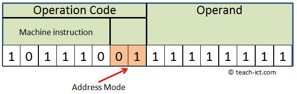

Instruction 명령어
-
폰 노이만(Von Neumann)구조 컴퓨터 : 명령어를 차례차례 순서대로 처리하는 일
반 컴퓨터를 말한다.
-
Instruction의 구성은

-
Operation Code(연산자부) : 연산자부는 OP-Code 라고 부르며 연산자부의
크기(비트 수)는 표연할 수 있는 명령의 종류를 나타낸다(n Bit 일 때 최대 2(n제곱)개의 명령어)
-
Mode(모드부) : 주소의 유효 주소가 결정되는 방법을 지정한다.
0이면 직접, 1이면 간접주소이다.
-
Operand(자료부) : 자료부는 실제 데이터에 대한 정보를 표시하는 부분으로 주소필드(Address Field)
라고도 하며, 기억장소의 주소, 레지스터의 번호, 사용할 데이터 등을 표시한다.
자료부의 크기는 메모리 용량과도 관계 있다.ex)자료부가 16Bit 라면 2의 16제곱 = 64K의
메모리를 주소로 지정하여 사용할 수 있다.
명령어 설계 시 고려사항
연산자의 기능(보통 컴퓨터의 Instruction의 기능을 말함)
- 1. 함수 연산 기능
- 산술 연산(수치적인 연산) : ADD, SUB, MUL, DIV, 산술Shift 등
- 논리 연산(비 수치적인 연산) : NOT, AND, OR, XOR, 논리적Shift, Rotate, Complement,
Clear 등
- 피연산자의 수에때라 연산자의 분류 :
단항 연산자(Unary Opeation) : NOT, Complement, Shift, Rotate, MOVE 등
이항 연산자(Binary Operation) : 사칙연산, AND, OR, XOR, XNOR 등
- 연산자의 우선순위
- 산술 연산자(^(거듭제곱) > x(곱셈) > /(나눗셈) > +,-)
- 관계 연산자(모두 우선순위가 같음)
- 논리 연산자(NOT > AND > OR)
- 2. 자료 전달 기능
- CPU와 기억장치 사이에서 정보를 교환하는 기능
- Load : 기억장치에 기억되어 있는 정보를 CPU로 꺼내오는 명령
- Store : CPU에 있는 정보를 기억장치에 기억시키는 명령
- Move : 레지스터 간에 자료를 전달하는 명령
- Push : 스택에 자료를 저장하는 명령
- Pop : 스택에서 자료를 꺼내오는 명령
- 3. 제어 기능
- 제어 기능은 명령의 실행 순서를 변경시킬 때 사용하는 명령이다.
- 무조건 분기 명령 : GOTO, Jump(JMP)
1) jmp 402000 : 직접 주소로 이동 한다는 의미
2) jmp [402000] : [ ] 로 표현하면 402000 주소가 가지고 있는 값으로 이동하라는 의미
3) jmp eax : 레지스터 이름을 써주면 eax 레지스터가 가지고 있는 주
소값으로 이동한다는 의미.
- 조건 분기 명령 : IF, SPA, SNA, SZA
1) SPA : SKIP IF AC is Positive (AC의 값이 0보다 크면 스킵)
2) SNA : SKIP IF AC is Negative (AC의 값이 0보다 작으면 스킵)
3) SZA : SKIP IF AC is Zero (AC의 값이 0이면 스킵)
- Call : 부 프로그램 호출
- Return : 부 프로그램에서 주 프로그램으로 복귀
- 4. 입.출력 기능
- CPU와 I/O장치 또는 메모리와 I/O장치 사이에서 자료를 전달하는 기능
- INPUT : 입.출력장치의 자료를 주기억장치로 입력하는 명령
- OUTPUT : 주기억장치의 자료를 입.출력장치로 출력하는 명령